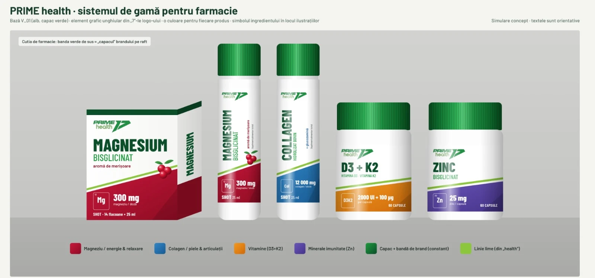

Bună ziua,
Mulțumim pentru cele trei variante. Le-am analizat atent, inclusiv față de ce există acum pe raftul de farmacie (Zenyth, Doppelherz, Walmark, Secom, Nature's Way, Hofigal, Dacia Plant, Herbagetica etc.), și am ajuns la o concluzie clară. V-o scriem structurat, ca runda următoare să plece de pe o direcție fixată.
1. Direcția aleasă: V_01 ca bază, cu sistemul de gamă din V_03
Nu alegem o variantă ca atare, ci o combinație:
- Din V_01 păstrăm: fondul alb și curat, capacul verde identic pe toată gama (cel mai bun element de recunoaștere, fără excepții), numele produsului mare și vertical pe shot, lipsa negrului și a neonului.
- Din V_03 luăm sistemul: un cod de culoare diferit pentru fiecare produs (sau nevoie) și simbolul ingredientului (Mg, Zn, D3K2, Col) ca element principal, în locul fotografiilor sau ilustrațiilor.
- Elementul grafic propriu: valul moale din V_01 ni se pare generic (îl au multe branduri „naturale”). Vrem ca banda să fie o tăietură dreaptă, înclinată în unghiul „7”-lui din logo, cu o linie lime (verdele din „health”) deasupra. E singurul element pe care nu-l are nimeni altcineva din categorie și e partea de „performanță” a brandului, spusă discret.
Motivul principal: în forma V_01, Prime Health rămâne „încă un brand alb-verde” și, de la 2 metri, se confundă cu grupul brandurilor verzi naturiste. Noi vrem să rămânem în codurile de farmacie, dar să ieșim din grupul acela.

(se descarcă din sesiunea cloud în folderul brand/ și apare aici automat)
2. Cerința numărul unu: produsele să se individualizeze foarte bine la raft
Gama va avea 10–20 de produse. Cu toate verzi, nici farmacistul, nici clientul nu le mai deosebesc. Vrem ca magneziul să se recunoască instant față de colagen, colagenul față de zinc, zincul față de D3+K2 și așa mai departe, fără să se citească textul mic. Concret:
- banda de jos își schimbă culoarea de la un produs la altul (ex. roșu magneziu, portocaliu D3+K2, mov zinc; pentru colagen evităm albastrul, care e albastrul farmaceutic al Zenyth și Doppelherz, și preferăm un roz-coral sau un turcoaz);
- paleta se fixează de la început pentru toată gama viitoare (10–20 de culori distincte, documentate), altfel sistemul se strică la produsul 8;
- simbolul ingredientului și doza (pătrățelul Mg / Zn / D3K2 + „300 mg”, „2000 UI + 100 µg”) stau mereu în același loc, pe bandă;
- verdele: nu verdele mediu „de farmacie naturistă”, ci combinația din logo, verde închis profund + lime ca accent;
- logo-ul mai mare și mereu în aceeași poziție. În V_01 brandul e cel mai mic element de pe față; principiul din brief e „at distance: own the brand”. Pe cutie l-am vrea cam de două ori mai mare decât acum.

(se descarcă din sesiunea cloud în folderul brand/ și apare aici automat)
3. Flacoanele de capsule: nu există aromă, deci eticheta riscă să rămână goală
La shot-uri fructul umple eticheta. Dar la capsule (zinc, D3+K2, magneziu, vitamina C, omega-3, NAC, ashwagandha, Q10, potasiu) nu avem aromă, iar fructul nu se poate extinde pe gamă. De aceea:
- fructul rămâne doar un detaliu mic de aromă, acolo unde există aromă (ex. shot-ul cu merișoare);
- la capsule, locul lui îl iau simbolul ingredientului, culoarea produsului și denumirea mare, ca eticheta să fie curată, dar să nu pară goală.
4. Cutia contează mai mult decât flaconul
În farmacie, shot-urile se vând în cutie (14, 20 sau 30 de fiole) și pe raft se vede doar cutia. Toate prezentările de până acum arată fiola singură, ceea ce e perfect pentru sală și online, dar nu pentru farmacie.
5. Ce vă rugăm să ne trimiteți în runda următoare
- Simularea pe cutia de shoturi (20 × 25 ml), nu doar pe fiolă, în direcția de mai sus, pe cel puțin un produs (magneziu).
- Simulare orientativă pe 3–4 produse unul lângă altul, ca pe raft: shot Magnesium, shot Collagen, borcan D3+K2, borcan Zinc, ca să vedem gama împreună și cum funcționează culorile. Nu trebuie finalizate; ne interesează sistemul.
- Paleta de culori propusă pentru toată gama Health (orientativ: Magneziu bisglicinat, Citrat de magneziu, Citrat de zinc, Vitamina D3 + K2, Vitamina C, Omega-3, NAC, Coenzima Q10, Ashwagandha KSM-66, Potassium Complex, Complete Collagen, Water Out, Daily Vitamin Formula, shoturile Energy Pump și Fat Burning Booster). Lista o confirmăm pe parcurs.
- Un termen estimativ pentru aceste simulări.
Schița atașată e făcută de noi ca ilustrare a direcției (vectorial, texte orientative); finisajul, materialele și tiparul rămân la dumneavoastră.
După ce primim simulările, le printăm la dimensiune reală și le punem pe un raft de farmacie lângă Zenyth, Doppelherz și Nature's Way, cu poze de la 2 metri. Pe baza acestui test confirmăm direcția și trecem la adaptarea pe toată gama.
Vă mulțumim și rămânem la dispoziție pentru orice întrebare.
Marius Chera
Prime Sport Supplements SRL
primesupplements.ro · contact@primesupplements.ro
🖼 PrimeHealth_sistem_gama_farmacie.png 🖼 PrimeHealth_test_raft_2m.jpg